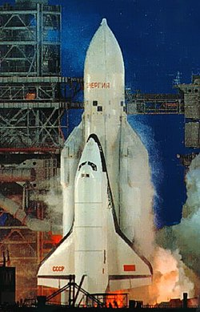
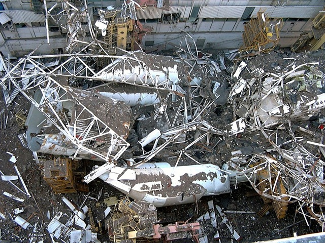

Ответ американскому вызову
В середине 1970-х годов в СССР пришли к выводу, что американская программа «Спейс Шаттл» может дать США решающее военное преимущество. Советское руководство опасалось, что многоразовые корабли смогут использоваться как носители ядерного оружия или даже для похищения советских спутников с орбиты. В 1976 году была официально утверждена строго засекреченная программа «Энергия-Буран». В её создании участвовало 1206 предприятий и почти 100 министерств и ведомств со всего Советского Союза.
Ракета-носитель «Энергия» стала настоящим инженерным чудом. Стартовая масса — 2400 тонн, высота — 60 метров. Она могла выводить на орбиту до 100 тонн полезного груза — это в пять раз больше, чем «Союз». На первой ступени стояли четыре боковых блока с двигателями РД-170, не имевшими аналогов в мире. Вторая ступень использовала водородные двигатели РД-0120. Ракета была настолько мощной, что могла доставлять грузы не только на орбиту, но и к Луне — до 32 тонн.
Сам орбитальный корабль «Буран» был рассчитан на 100 полётов. Его длина — 36,4 метра, размах крыльев — 24 метра, стартовая масса — 105 тонн. В грузовом отсеке объёмом 350 кубических метров можно было разместить до 30 тонн груза, а экипаж мог достигать 10 человек. Корпус корабля покрывали более 38 тысяч кварцевых плиток теплозащиты, способных выдерживать экстремальные температуры при входе в атмосферу.
Полёт, ставший легендой

15 ноября 1988 года в 6 часов утра с космодрома Байконур стартовала ракета «Энергия» с кораблём «Буран». Полёт прошёл полностью в автоматическом режиме — без экипажа на борту. Компьютер сам управлял кораблём на всех этапах.
«Буран» совершил два витка вокруг Земли, пробыв в космосе 205 минут. А затем произошло то, что поразило весь мир: корабль самостоятельно зашёл на посадку и приземлился на аэродроме «Юбилейный» с отклонением от оси взлётно-посадочной полосы всего в полтора метра. Это был первый и единственный в истории случай автоматической посадки космического корабля многоразового использования. Достижение до сих пор остаётся непревзойдённым.
Один из создателей системы говорил о значении этого события:
«Это была победа. Мы доказали, что можем всё. И автоматика, и конструкция — всё работало идеально».
Финал эпохи
Второй полёт должен был стать пилотируемым. К нему уже готовили специальный отряд космонавтов. Но в 1990 году программу приостановили, а в 1993 году окончательно закрыли. Официальная причина — нерентабельность. Но многие участники тех событий считали иначе.
Один из разработчиков вспоминал:
«Это была политика. Проект закрыли не потому, что он был плохим, а потому что страна разваливалась и новым властям было не до космоса».

12 мая 2002 года случилась трагедия. На Байконуре в монтажно-испытательном корпусе обрушилась крыша. Погибли восемь строителей. Под завалами погиб и единственный летавший в космос «Буран» вместе с ракетой-носителем «Энергия».
Но технологии, созданные для «Бурана», не исчезли бесследно. Автоматическая посадка дала жизнь современным беспилотникам, двигатели РД-170 до сих пор используются в российских и зарубежных ракетах, а теплозащитные материалы нашли применение в авиации. Сам «Буран» погиб, но его наследие живёт в каждом запуске, где работает та самая автоматика, которая впервые посадила корабль без человека. «Буран» опередил своё время. И даже спустя десятилетия его полёт остаётся символом того, на что способна отечественная инженерная мысль, когда перед ней стоит великая цель.